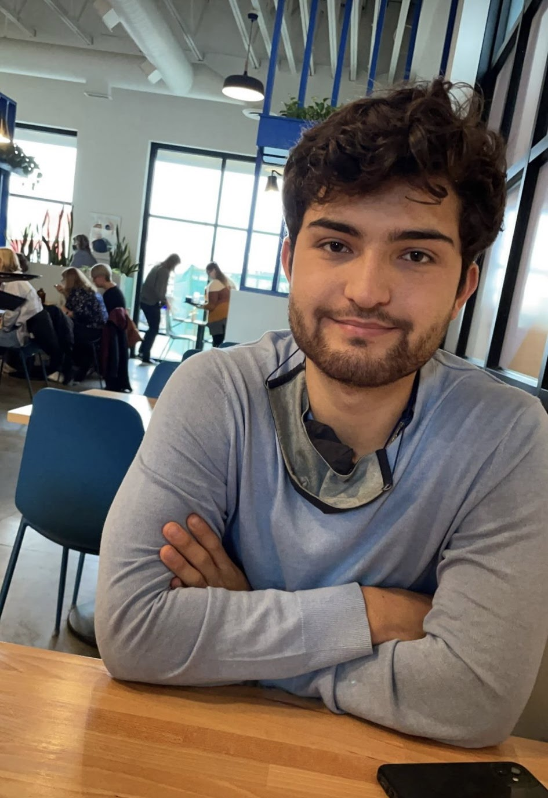

About Me
Software Engineer with a background in Computer Science and Economics.
Experience in software development, database design, data analysis,
machine learning , and econometrics. Driven by a strong desire to
excel in the technology industry, I am committed to continuous
learning and consistently exceeding expectations.
Education
Bachelor of Science, double major in Computer Science and
Economics
-
University of British Columbia
Coursework : Software Engineering,
Machine Learning, Financial Economics, Databases, Networks
Technical Skills
-
Programming Languages: Python, Java, SQL, R, JavaScript, HTML, CSS,
Git
-
Frameworks and Libraries: Flask, Selenium, Pandas, NumPy,
Sickit-learn
- Database Design, Data Analysis, Statistical Modelling
Awards
Deputy Vice Chancellor Award - University of British Columbia (Sep
2021)
-
Scholarship awarded to continuing international students based on
academic achievement.